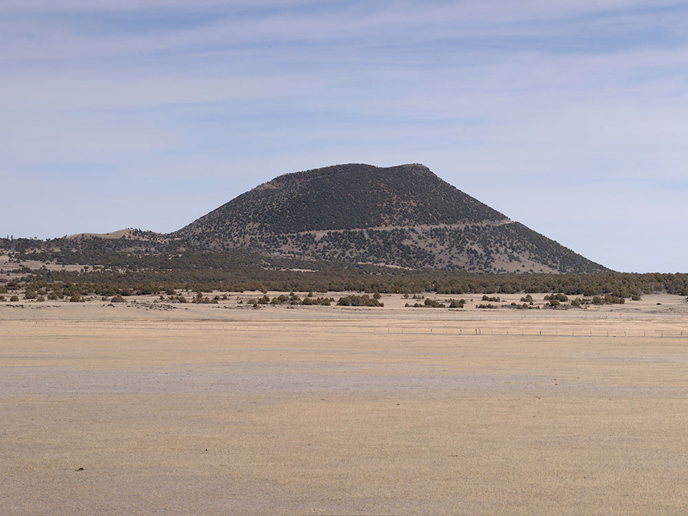
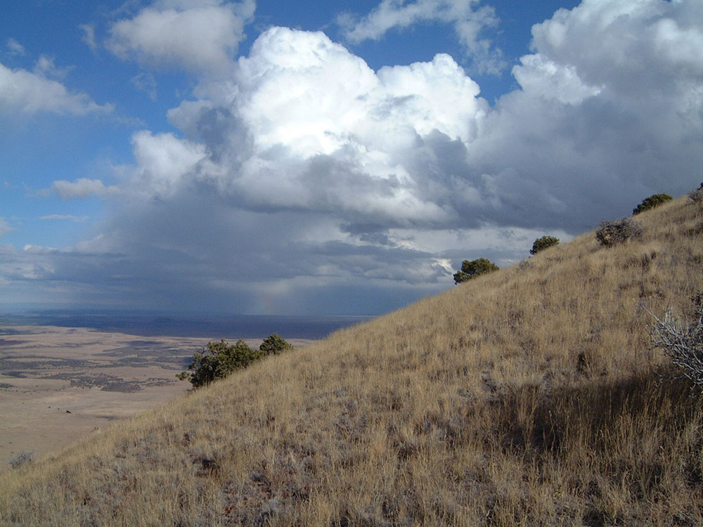
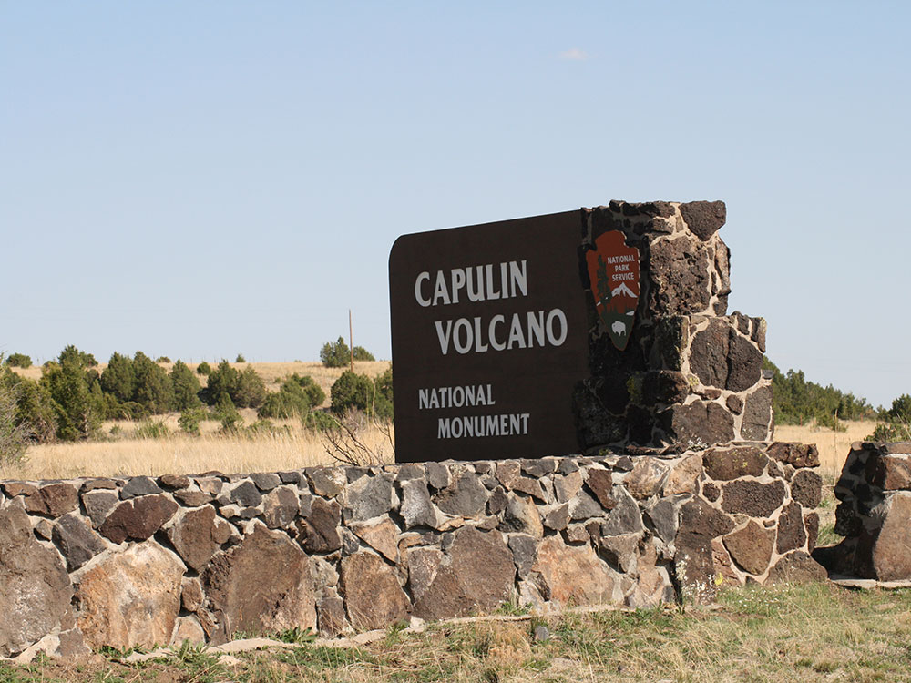
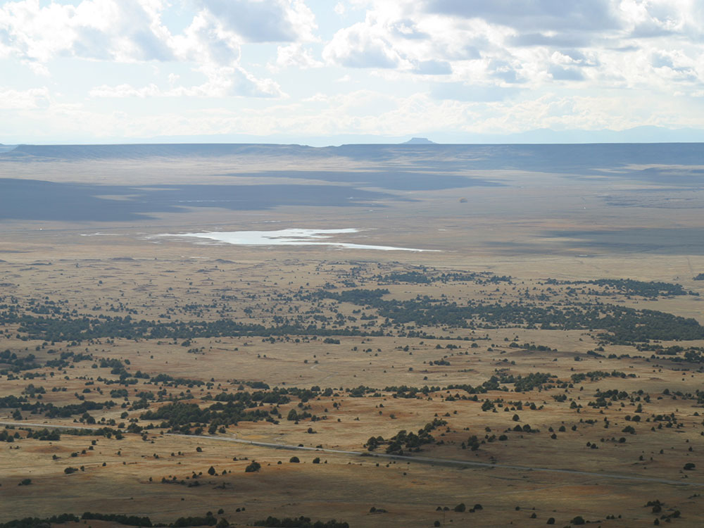
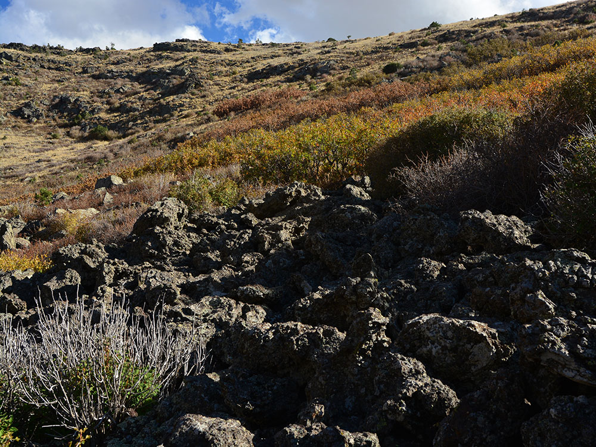
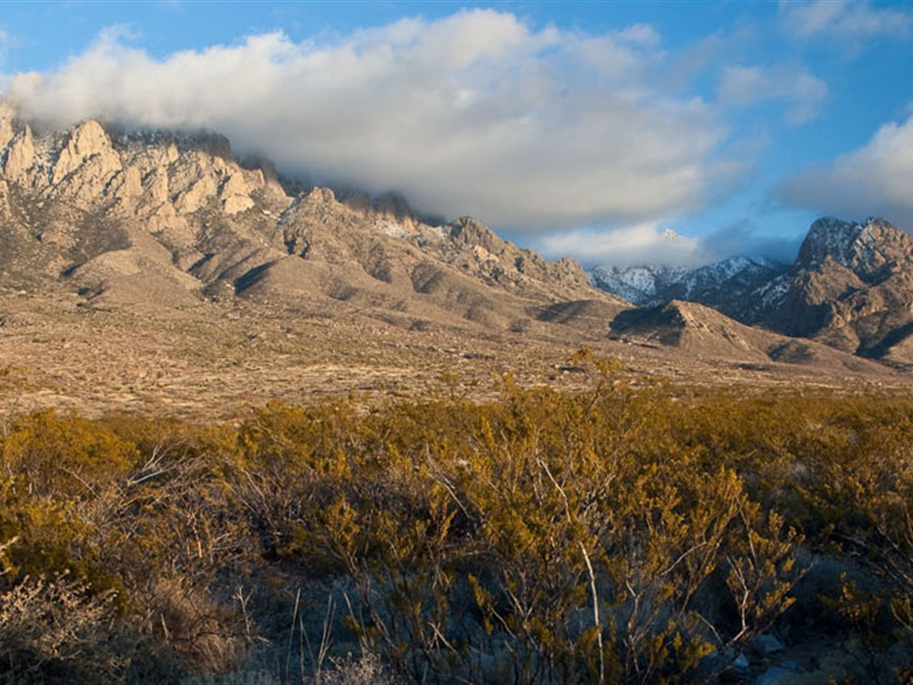
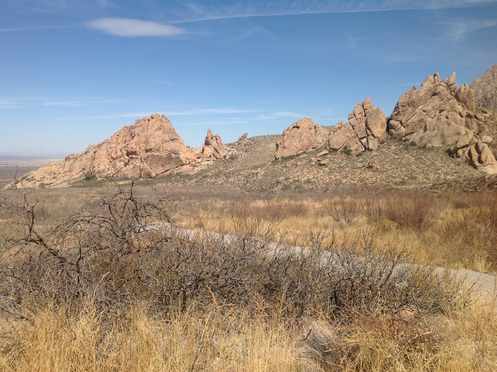
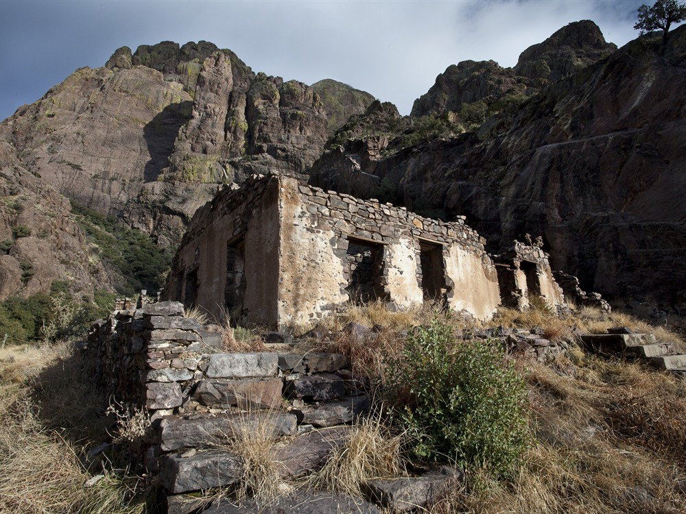
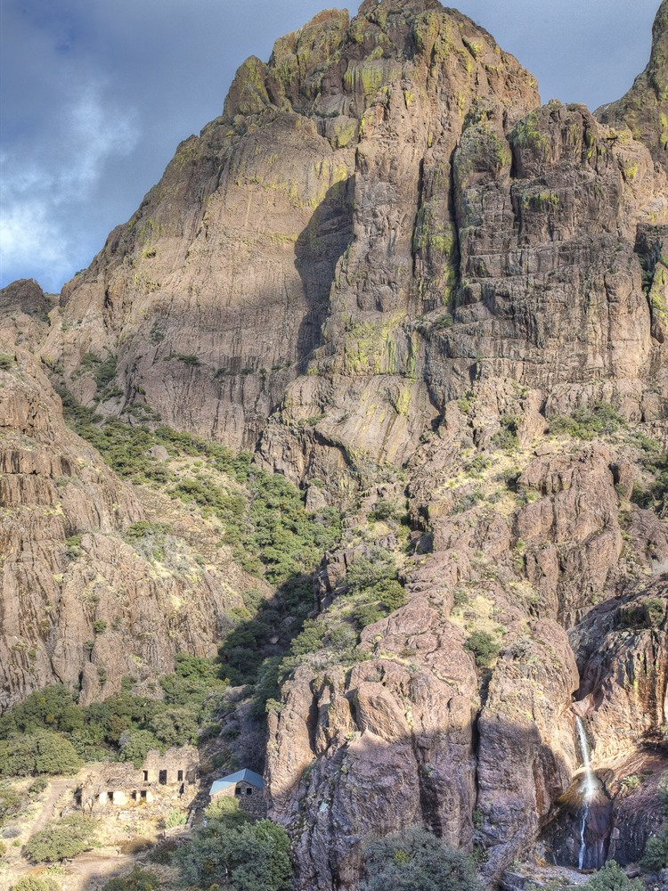

.JPG){kind=link}
A desert mountain recreation area featuring scenic hiking trails, historic ruins, and a seasonal spring surrounded by rugged canyon landscapes.
~450–500 ft elevation gain
Easy to Moderate
November to March: 8am to sunset
Closed Thanksgiving, Christmas, and New Year’s Day
$15 per commercial vehicle
How to Get There
From Las Cruces (10 mi): From Interstate 25 take Exit 1 onto University Avenue/Dripping Springs Road and follow it east for about 10 miles to the end of the road at the entrance.
Overview
Dripping Springs Natural Area is a day-use area at the foot of the Organ Mountains, about 10 miles east of Las Cruces, and is part of the Organ Mountains-Desert Peaks National Monument managed by the Bureau of Land Management. The area is known for its seasonal spring, which seeps down a rock face in the canyon, and for the ruins of the late-1800s Van Patten Mountain Camp, a resort that later became the Boyd Sanatorium for tuberculosis patients. Trails wind through Chihuahuan Desert foothills with views of the jagged granite peaks, and the combination of history, wildlife and accessible hiking has made it one of the most popular outdoor destinations in southern New Mexico. Visitors come for easy day hikes, picnics, birdwatching and the cooler air of the canyon.
Access
The natural area is at the end of Dripping Springs Road, about 15 to 25 minutes from Las Cruces. From I-25, take exit 1 onto University Avenue, which becomes Dripping Springs Road, and follow it east for about 10 miles to the entrance station. The road is paved, parking is plentiful, and a day-use fee is charged per vehicle. There is no public transportation, so most visitors drive. The main trail is a wide, former road, and the area has picnic shelters and restrooms near the visitor center.
Seasons
The natural area is open year-round, and spring and fall are the most comfortable times for hiking, with mild temperatures and spring wildflowers. Summers are hot, with little shade on the trails, so early morning is best, and afternoon monsoon storms can bring flash flooding to the canyon. Winters are generally mild with cool mornings and occasional snow dusting on the peaks. The spring flows best after wet weather and in late winter and spring, and it can run dry in dry seasons. Hours are earlier in the winter, and the area is closed on major winter holidays.
Things to Do
Hike to a Historic Mountain Resort
Dripping Springs Natural Area offers an easy hike to the remains of Van Patten's Mountain Camp, a late-19th-century resort built around the spring. The stone ruins of the sanatorium and other buildings sit in a scenic canyon with mountain views.
See the Dripping Spring
The seasonal spring that gives the area its name lies in the rocky canyon above the ruins. Water seeping down the cliff face creates a cool, green setting in the middle of the desert.
Visit the Dripping Springs Visitor Center
The visitor center at the trailhead has exhibits on the area's natural and cultural history, as well as information about trails, wildlife and the Organ Mountains-Desert Peaks National Monument.
Take a Shorter Nature Walk
Shorter trails branch from the main route, including the La Cueva Trail, which leads to a rock shelter once used by Native Americans, hermits and travelers. These make good options for families and those short on time.
Watch for Wildlife and Desert Plants
The foothills are home to mule deer, roadrunners, hawks and many desert plants such as ocotillo, agave and yucca. Dawn and dusk are the best times to see animals.
Top Trails
Dripping Springs Trail
Length: Approximately 3 miles round trip
Elevation Gain: Approximately 450 to 500 feet
Difficulty: Easy to Moderate
This wide trail climbs gradually through desert scrub to the ruins of the Van Patten resort and the spring, with open views of the Organ Mountains. It is a good choice for families and casual hikers.
La Cueva Trail
Length: Approximately 1.5 miles round trip
Elevation Gain: Moderate
Difficulty: Easy to Moderate
This shorter trail leads to a rock shelter and picnic area at the base of the mountains. It is often combined with the Dripping Springs Trail for a longer outing.
Visitor Centers
The Dripping Springs Visitor Center at the trailhead is the main information stop for this part of Organ Mountains-Desert Peaks National Monument. It has exhibits on the history, geology and wildlife of the area, maps, restrooms, picnic areas and a small bookstore, and staff and volunteers can provide trail advice. Hours vary by season and the center is closed on Thanksgiving, Christmas and New Year's Day, so check the BLM website before going. A day-use fee is charged for each vehicle.
Camping and Lodging
There is no camping or lodging at Dripping Springs, which is a day-use area. The nearest camping is at the BLM's Aguirre Spring Campground on the east side of the Organ Mountains, about 30 minutes away. Las Cruces offers a wide range of hotels, restaurants and shops only 20 minutes from the trailhead, and the historic village of Mesilla has inns and dining. El Paso, Texas, about an hour south, offers additional lodging. Check each property's website for current availability.
This article uses material from the Wikipedia articles and official tourism pages for the Dripping Springs Natural Area, which are released under the Creative Commons Attribution-Share-Alike License 3.0. Additional information from the Bureau of Land Management.











.jpg){kind=link}

.JPG){kind=link}


.jpg){kind=link}